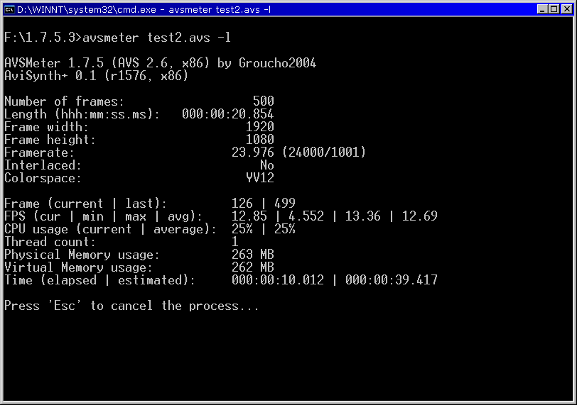

AVSMeter is a CLI (command line interface) tool that "runs"
an Avisynth script with virtually no overhead, displays clip info,
CPU and memory usage and the minimum, maximum and average frames
processed per second. It measures how fast Avisynth can serve
frames to a client application (x264, for example) and comes in
handy when testing filters/plugins to evaluate their performance
and memory requirements.

Usage:
Usage: AVSMeter script.avs [-l] [-i]
The "-l" switch creates a log file ("script.avs.log") which
contains information about the Avisynth version used, clip info,
runtime info, a table with statistics for each frame interval and
a copy of the script itself.
The "-i" switch displays/logs just the clip info.
AVSMeter checks if a settings file ("AVSMeter.ini") exists in the
directory from where it is started. If not, it will be created
with the default settings.
Supported settings for the INI file (default values in red):
"CreateLog" (0 or 1):
Determines if a log will be created or not. Note: The command line
switch "-log" overrides the ("0") INI setting.
"PauseBeforeExit" (0 or 1):
If set to "1", pauses the program at the end and returns to the
console prompt only after pressing "ESC".
"FrameRange" (first,last):
Specify the range of frames to be processed. "FrameRange=0,-1" processes all frames in the
script. "FrameRange=1500,1999" processes 500 frames starting at
frame 1500. The smallest supported interval depends on how many
frames/second are processed. The script has to run for at least
~200 ms, otherwise no data is captured.
"InvokeDistributor" (0 or 1):
For Avisynth MT users: If set to "1", adds the "Distributor" call
internally if the script uses MT Mode 1~4 (via "SetMTMode"). Note:
Setting this value to "1" and adding the Distributor call
in the script will unnecessarily increase the number of threads
which leads to increased memory usage and suboptimal performance.
The "InvokeDistributor" setting is ignored when using non-MT
versions of Avisynth.
There are 3 versions:
[AVS2.5_x86] - For Avisynth 2.5x
[AVS2.6_x86] - For Avisynth 2.6 Alpha4 and above (including SEt's
MT version) and Avisynth+ 2.6x
[AVS2.6_x64] - For Avisynth+ 2.6x 64 Bit